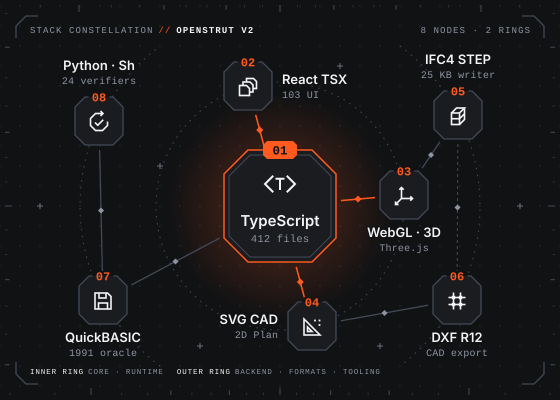
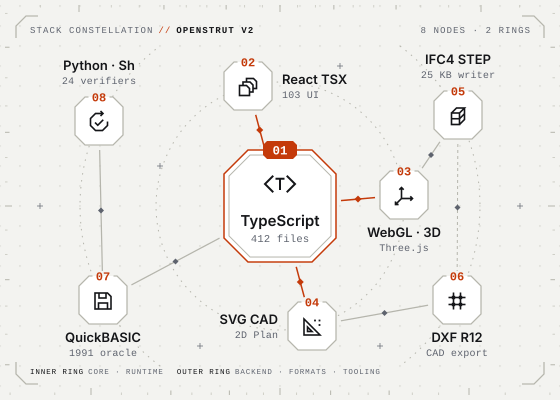

src/dominio/
Domain
The project model. It places beams on slab edges and columns at their crossings automatically.
Case study 02 // structural engineering // TypeScript
A free, offline-first web app for reinforced-concrete design of simple buildings: slabs, beams and columns, floor by floor. It runs in the browser with no server, under two design codes, and exports IFC4, DXF R12 and glTF.
Official links
Nk. The (!) badges mark parts affected by a defect of the 1991 program.01 // Stack
Counted on disk with os.walk, skipping .git, node_modules, dist and build. Select a node to read its role.


01 // TypeScript // 412 files352 in src/. The structural engine for both codes, domain geometry, the 182-line IFC4 STEP writer, the DXF R12 exporter, the SISTRUT 1991 parser, 187 Vitest suites and 40 Playwright tests.
02 // Architecture
Four stages, all in the browser: local-first input and importers, a pure calculation engine, detailing with code checks, and client-side outputs. No server sits on the path.
src/dominio/
The project model. It places beams on slab edges and columns at their crossings automatically.
src/calculo/
Pure TypeScript with no React import: normas/, lajes/, vigas/, pilares/, detalhamento/, fluxo.ts.
src/planta/ + obra3d/
The SVG plan editor and the Three.js viewer sit on top of the engine. The engine imports neither.
src/armazenamento/
.openstrut.json files, an IndexedDB draft through idb-keyval, Google Drive import and the SISTRUT 1991 importer.
03 // Engine
The engine implements two codes. NB-1/78 has two modes: one reproduces the 1991 program bit for bit, the other runs the same algorithms with its catalogued defects fixed. Select a mode to compare.
| Property | NBR 6118:2023 | NB-1/78 corrigido | NB-1/78 original |
|---|---|---|---|
| Units | SI | SI, 500 MPa steel, 25 kN/m³ | t, m, cm, t/cm² |
| Arithmetic | Float64 | Float64 | Float32 (SINGLE), rounded at every assignment |
| Goal | Design to the current code | Legacy algorithms with catalogued defects fixed | Match SISTRUT 4.0 number for number |
| Checked against | Bastos (UNESP) worked examples, hand calculations, numerical integration | Shares the algorithms checked in the original mode | The 1991 binary in DOSBox-X |
NBR 6118:2023Current Brazilian code. Slabs by the Bares/Pinheiro elastic tables with Branson immediate deflection and long-term deflection; columns up to slenderness 140 with the M-N-1/r diagram and creep.
NBR 6118:2023 // slabs and beams
NBR 6118:2023 // columns
src/calculo/detalhamento/
Good and poor bond zones, anchorage lengths lb and lb,nec, shift of the moment diagram, 90°, 135° and semicircular hooks, lap splices, ties and the steel schedule by bar diameter.
04 // Formats
OpenStrut writes ISO 10303-21 STEP text directly. step.ts is 182 lines with no dependency, and the export chunk loads only when the user exports.
Bytes downloaded for IFC export
Bars share one scale. The writer is 1/64 of the size of the web-ifc WebAssembly file.
IfcColumn, IfcBeam, IfcSlab and IfcReinforcingBar, with bars as IfcSweptDiskSolid through IfcMappedItem.@ifc-lite/parser..LAJ, .VIG, .COL, .SEC, .FOR, .TAB, .EDV and more, in Windows-1252 with the ^Z end-of-file mark.05 // Verification
An expected value in OpenStrut never comes from the function under test. It comes from a source the code did not produce.
# .github/workflows/ci.yml bun run check tsr generate && tsc -b --noEmit && oxlint && oxfmt --check && vitest run # then the Playwright E2E suite, which checks # the printed PDF report with pdftotext
06 // Interface
Captures of the live app. Pick a plate; select the large view to enlarge it.
Engineering notice
OpenStrut results require review by the responsible structural engineer before any use. ABNT standards are paid documents, so the NBR 6118:2023 coefficients come from public university course notes cited in the code and in docs/norma/. Points not yet confirmed carry the marker [VERIFICAR].
OpenStrut is an independent rebuild of SISTRUT 4.0 by reverse engineering, with no link to the original authors.